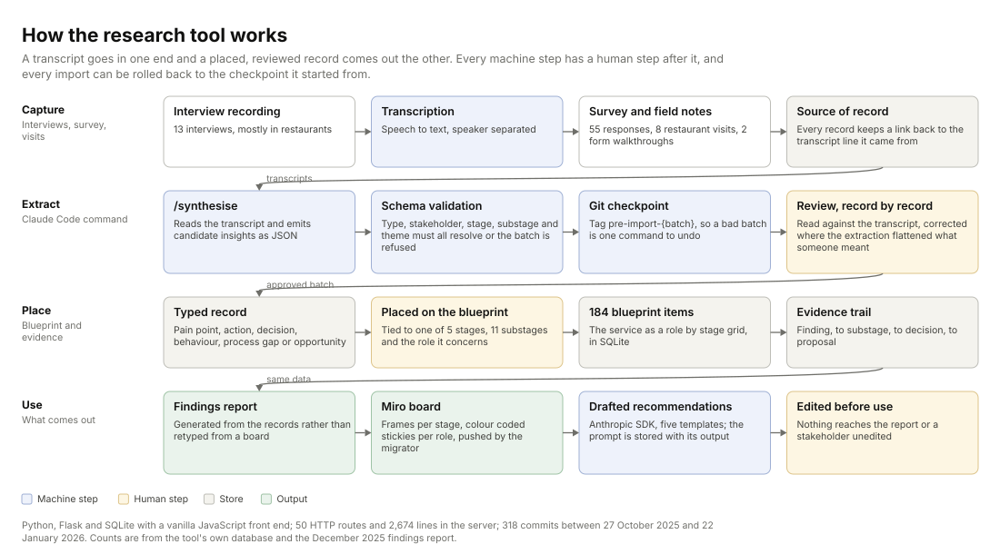

A safety incident and hazard reporting platform used across several hundred KFC South Pacific restaurants. Reporting consistency varied widely between sites and nobody could say why.
My roleExperience Designer. Led the research and design work, built the tool that holds the evidence, designed the product concept.
CollaboratorsCentral safety team, training team, area safety leads, restaurant managers and team members as participants.
ConstraintsThe platform was a configured vendor product, not something we could rebuild. Phone policies differed by restaurant. Research had to fit around peak trade.
Key decisionRecommend changes to what the form asks and to manager routines, rather than a new system. The evidence pointed at the workflow and the culture around it, not at the software.
StatusDelivered December 2025: findings report, service blueprint, prioritised three-phase roadmap and form prototypes, refined through a stakeholder validation session. Implementation sits with the platform, safety and training teams. The ten-module concept was designed in September 2026 from the same findings.
AnonymisationVendor, sites and people removed. Research counts are as the December 2025 findings report records them. Every name and number on the concept screens is invented.
The problem
A platform configured for one workflow, used through another. The intended path was simple: a team member notices a hazard or has an incident, scans the QR code on the safety poster, fills in the form. The research found a different path in almost every restaurant. The team member tells the manager. The manager decides whether it is worth logging, logs it if so, and sometimes closes it without telling anyone. In restaurants that ban phones on shift, the QR code was not even an option, so the manager became the reporter by default without anyone deciding that.
Reporting volume varied a lot between restaurants. Low volume could mean a safe restaurant or a silent one, and the platform's data could not tell the difference. The safety team wanted to know what was getting in the way.
How I approached it
Design the sample to test the explanation, not to collect complaints. The working assumption in the business was that location explained reporting differences: rougher suburbs, rougher safety culture. If that was true, the sample had to be able to show it. So the restaurant sample was deliberately mixed: eight restaurants across high- and low-reporting sites, higher- and lower-crime suburbs, metropolitan and regional.
- Thirteen in-depth interviews with team members, restaurant managers, area safety leads, a franchisee and the central safety team, mostly in the restaurants, some by phone.
- A team survey with 55 responses on awareness, training, ease of reporting and what happens after a report.
- Restaurant visits, watching how a report actually gets made during a shift and looking at the posters, the first-aid cabinet and the office setup.
- Two walkthroughs of the platform's forms with the safety team, field by field.
Every observation became a typed record. A pain point, an action people already take, a decision point, a behaviour, a process gap or an opportunity. Each record was tied to a stage and substage of the incident journey and to the role it concerned. That structure is what let the findings report point at exact places in the service rather than at themes.

Why I built a tool
The synthesis outgrew the documents, and then it outgrew the board. The blueprint had lived on a Miro board: one sticky per item, coloured by type, placed by hand in a role-by-stage grid. That worked until the synthesis started moving. Every new batch of interviews reclassified items, moved them between substages and split them, and every move had to be made twice, once in the record and once on the board. The findings report was then retyped from the board a third time.
So I made the records the source and everything else an output. The tool is a Flask application over SQLite with a vanilla JavaScript front end: 50 HTTP routes, 2,674 lines in the server, 37 Python scripts around it, 318 commits between 27 October 2025 and 22 January 2026. It holds the blueprint, the typed records and the trail between them, and it renders the board, the report and the evidence views from the same data.
{kind=link}

The Miro board is still there, and the migrator is what proves what the manual version was. Two scripts in the repository push the blueprint out to Miro as stage frames with colour-coded stickies grouped by role, and a third pulls changes back and merges them. Reading the migrator is the clearest description of the work it replaced: for each cell in the role-by-stage grid, for each item in that cell, create a sticky with the category's colour and icon at a computed position. That loop ran 184 times in a second. By hand it is a day.
What the tool saved
This is an estimate, and it is built from counted work rather than from a stopwatch. I did not time the manual version, because the manual version is the thing the tool replaced. The counts come from the tool's own database and the December 2025 findings report. The one number I assumed is the minutes it takes to write, colour and place a single sticky, and it is visible below so anyone can change it.
Counted
- 184 blueprint items to place
- 5 stages, 11 substages, 4 role lanes
- 232 insight records linked behind them
- 6 record types, each with its own colour
Assumed
- 3 minutes to write, colour and place one sticky
- 4 rebuilds as the synthesis changed
- Reading and retyping the report from the board is excluded
With the tool
- One command runs the migrator
- The board is rebuilt from the records, not edited
- Changes made on the board are pulled back and merged
Change the assumption and the arithmetic changes. At two minutes a sticky the four rebuilds are 25 hours; at five minutes they are 61. The saving is not the real argument. The real argument is that a board rebuilt from the records cannot drift from them, and the report generated from the same records cannot either, which is what went wrong when all three were maintained separately.
What the research found
Location did not predict safety culture. The manager did. Across the mixed sample there was no difference that tracked the suburb. Where a manager talked about safety, thanked people for reports and showed the system on the first shift, reporting was strong regardless of where the restaurant was. This was the finding that reorganised the recommendations.
People reported to a person, not a platform. Team members described telling the manager first, almost without exception. They trusted their managers; nobody described feeling embarrassed or afraid to report, even when they had been doing the wrong thing. The barrier was not fear. It was the form, the phone and the threshold.
The form asked questions the reporter could not answer. Incident type came first, with options like first aid or lost time that nobody can predict while their hand is under the cold tap. The notifiable-to-the-regulator question sent people to a compliance matrix. Even area safety leads admitted asking the restaurant's safety champion which option to choose. Misclassified reports got sent back from above, and everyone learned that reporting was a way to get something wrong.
Reporters rarely heard what happened next. Minor reports were closed without a word. Over time that built the belief that reporting helps you with a claim but does nothing for anyone else. The exceptions proved the point: the restaurant where a faulty piece of equipment was fixed the same day had a story people kept telling.
Time pressure was real but smaller than it felt. Managers said a report takes one to three minutes. The cost people felt was stepping off the floor during a rush, and needing the manager's permission to do it.
Three decisions
The findings report carried a prioritised roadmap. These are the three proposals I would defend in an interview, with the alternative each one rejected.
Ask what happened first; let the manager classify the outcome later
Evidence. Dropdown options that do not describe kitchen incidents; a regulator question no team member can answer; classification errors flagged from above; hazard categories that contain events rather than conditions.
Alternative considered. Add help text and examples to each field. Rejected because the categories themselves were the problem: an industrial taxonomy applied to a kitchen, in an order that asks for the outcome before the event.
Proposal. One entry point, then the mechanism in the reporter's own words, then the manager sets severity after the welfare check. Regulatory questions move to the manager's review. The safety team supported mechanism-first because it also gives them cleaner data. A clickable form prototype made the argument concrete: open the prototype, or see the full reporting flow with its states in the concept.
Standardise what the manager does on the first shift and every day after
Evidence. The manager finding above; induction that varied from a full demonstration to nothing; no check that a new starter understood; survey respondents who had never been trained on the platform; team members who found the form easy once someone had encouraged them.
Alternative considered. A platform fix, such as simpler login or a guest mode. Kept on the roadmap, but pushed to a later phase, because the cheapest lever was the manager's routine and the research said it was also the strongest one.
Proposal. An onboarding checklist with a mandatory QR demonstration, a short template for the manager's own explanation of why reporting matters, a daily check-in card and a plain-language guide to what counts. In the concept this becomes part of the product rather than a separate pack: the manager's dashboard carries the routine and the knowledge base answers the threshold question.
Close the loop between a report and what changed
Evidence. Survey and interview accounts of never hearing back; minor reports closed silently; the same-day equipment fix that everybody remembered; managers who already share fixes in shift briefings.
Alternative considered. Recognition programmes that reward report counts, which some restaurant groups already ran. The safety team's view was blunt: put an incentive on hazard reports and you get reports, not hazards. The field evidence agreed.
Proposal. Recognise outcomes rather than volume. A monthly notice of fixes that came from reports, a template message to the reporter when a report is resolved, and, later, automatic outcome notifications. In the concept, closing an action asks for evidence and offers to tell the reporter, with the message already written.
The ideal state, module by module
The delivered work stopped where the constraint was. The platform was a configured vendor product, so the recommendations were about the form and the routines. The question that leaves open is the one an employer actually asks: what would the service look like if the software followed the evidence? So in September 2026 I designed it, module by module, following the navigation of the product the restaurants used.
Ten screens on one design system, each shown whole with numbered notes naming the finding, the decision and the alternative rejected. Every component was checked against shipped products before it was drawn, and the references are cited on the page.

Open the full concept, with the design system, the tokens and the pattern references.
Delivered, and what happened next
- A findings report with the four themes, the evidence behind each, proposals by theme, form-redesign prototypes and a three-phase roadmap: quick wins, process and culture, system evolution.
- A five-stage, eleven-substage service blueprint with lanes for the team member, the manager, backstage roles and the platform.
- The insight tool: typed records linked to substages, filterable by stakeholder, type, theme and source, with the report generated from the same data.
- Concept mockups for the incident form, the onboarding checklist, the daily check-in card and a reporting-threshold reference.
The report records that the recommendations were refined through a stakeholder discussion and that the roadmap was updated afterwards. Implementation of the form change sat with the platform owner; the manager routines sat with the safety and training teams.

How AI was used, and where it stopped
Three jobs, each with a gate after it. AI transcribed the interviews. It extracted candidate insights from transcripts and classified them by type, stakeholder and theme, through a Claude Code command whose output is validated against a schema before it can be imported, with a git tag written first so a batch can be rolled back whole. And an Anthropic SDK endpoint drafts recommendations from five templates, storing the prompt alongside its output so any draft can be traced to what produced it.
None of it counted until I had reviewed it. Every one of the 232 records was read against the transcript, corrected where the extraction had flattened what someone meant, and placed on the blueprint by hand. The drafted mockups and recommendations were edited before they went into the report. That review step is the part I can describe field by field, and it is the part that makes the rest of it usable.
The same discipline produced this page. The concept screens were designed and written by me on a design system I built, checked against shipped products, and measured by a contrast script and a lint gate that fail the build rather than warn about it.